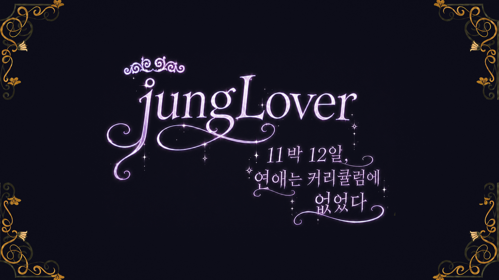

진행 상황이 계정에 저장돼, 다른 기기에서도 이어서 할 수 있습니다.
사양 · 16:9 · 배경 jungLover_intro.png(1920×1080 원본, 크롭 없음) · 하단에만 옅은 스크림 · 버튼 하나와 한 줄 설명뿐 · 본문 Pretendard(여기서는 시스템 한글 폰트로 대체 — 구현 시 교체) · 게임 화면이라 단일 테마 고정
jungLover_intro.png